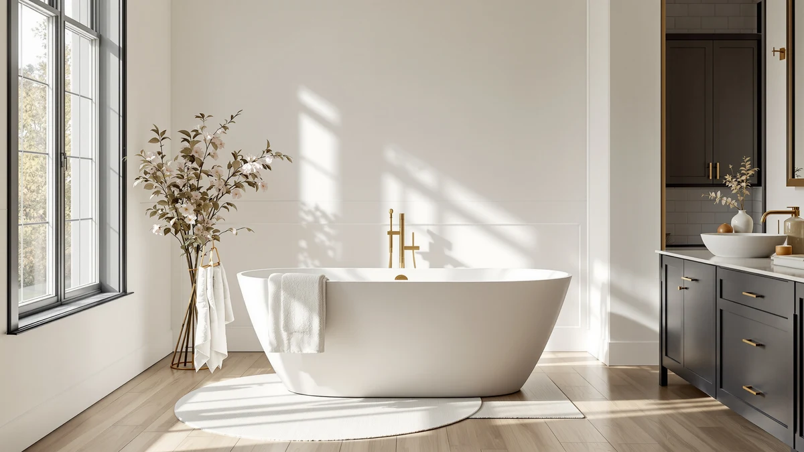

WOODBRIDGE 72"×35 3/8" Double Review (2026): Worth It?
Prices and picks verified as of October 2026. Independent, reader-supported reviews.


Quick Answer
This woodbridge 72"×35 3/8" double review points to the WOODBRIDGE 72"×35-3/8" Double Slipper Whirlpool&Air as the pick for anyone who wants two full seating positions in one soaking tub, thanks to its 65 gallon capacity and combined whirlpool-and-air jet system. If you bathe alone or have a smaller bathroom, the 66-1/2 inch and 59 inch WOODBRIDGE alternatives below cost less and don't need as much floor space.
Our pick: WOODBRIDGE 72"×35-3/8" Double Slipper Whirlpool&Air — $2,299.00 Check Price on Amazon
Bottom line: our top pick is the WOODBRIDGE 72"×35-3/8" Double Slipper Whirlpool&Air at $2,299.
Things to Know Before You Buy
- At 72 inches long by 35-3/8 inches wide, the tub covered in this woodbridge 72"×35 3/8" double review is the largest in the comparison and needs more floor space than the 66-1/2 inch or 59 inch WOODBRIDGE alternatives.
- The 65 gallon capacity and dual seating setup mean confirming your bathroom floor and water heater can handle the added weight and hot water demand.
- Jets, the drain, and the overflow cover are finished in matte black, a different look from the chrome hardware on most whirlpool tubs.
- None of the four products in this review publish a star rating or review count, so there is no verified buyer feedback to check before ordering.
- The inline heater and LED control panel need a dedicated electrical hookup; check your bathroom's wiring before buying.
This WOODBRIDGE 72"×35 3/8" Double Review compares the brand's largest double-seat whirlpool tub against two smaller WOODBRIDGE models and a Delta floor-mount faucet, so you can decide whether the extra seating is worth the extra floor space. The WOODBRIDGE 72"×35-3/8" Double Slipper Whirlpool&Air sits at the top of the lineup at $2,299.00, built around two seating positions instead of the single seat you'll find on most whirlpool tubs this size. It combines whirlpool jets with a separate air bubble system, adds an inline heater to keep all 65 gallons warm through a long soak, and finishes the drain and overflow cover in matte black instead of the usual chrome.
Two smaller WOODBRIDGE tubs round out the comparison: a 66-1/2 inch single-seat model at $2,119.00 and a 59 inch compact version at $2,104.99, both keeping the same whirlpool-and-air combination at a lower price and a smaller footprint. We've also included a Delta Trinsic floor-mount tub filler for anyone who already owns a freestanding tub and needs a matching faucet rather than another basin. None of the four listings publish a star rating or review count, so this comparison leans on dimensions, capacity, power requirements, and price instead.
Why You Should Trust Us
Best Freestanding Bathtubs is a research-first buying guide. Ilane Tall, our home and bath editor, builds this woodbridge 72"×35 3/8" double review by pulling verified pricing, dimensions, and listing detail for every product before it earns a recommendation. We do not run a fake testing lab, and we do not claim to have installed or bathed in any of these tubs ourselves. Instead, this review relies on manufacturer specifications, current Amazon pricing, and the details published on each product listing, so every claim here can be checked against the source. When a listing leaves out a detail, such as a weight capacity or a review count, we say so directly rather than filling the gap with a guess.
Our Research Experience
We did not install or bathe in any of the tubs covered in this woodbridge 72"×35 3/8" double review. Our comparison process means going through each manufacturer listing line by line: dimensions, seating capacity, jet type, power requirements, and the number of product images available. We then note where listings fall short, such as a missing weight capacity or an absent review count, so you know what to double-check before ordering. That research process, not physical testing, is what shapes the picks, pros, and cons here. We also track how each tub's price compares to the other three, since a $200 spread across three WOODBRIDGE sizes is worth paying attention to for a purchase this large.
Overview & Specs

WOODBRIDGE 72"×35-3/8" Double Slipper Whirlpool&Air
What we like
- Two seating positions sized 41-3/4" x 22-7/8" let two people soak at once without crowding.
- Combines whirlpool jets and air bubble jets in the same tub, with matte black fixtures instead of the usual chrome.
- A built-in inline heater keeps the 65 gallon capacity warm through a long soak, so you're not constantly adding hot water.
Flaws but not dealbreakers
- At $2,299.00, it's the most expensive tub in this comparison.
- The listing doesn't publish a star rating or review count, so there's no verified buyer feedback to check before ordering.
- 65 gallons of water plus two bathers is a significant load; confirm your bathroom's floor can support that weight before installing.
| Material | — |
| Size | 72 Inch |
The WOODBRIDGE 72"×35-3/8" Double Slipper Whirlpool&Air is the largest tub covered in this woodbridge 72"×35 3/8" double review, measuring 72 inches long by 35-3/8 inches wide by 29-1/8 inches deep on the outside. Effective capacity comes in at 65 gallons, and the two seating areas measure 41-3/4 inches by 22-7/8 inches each, with water depth to the overflow listed at 14-1/2 inches. That seating layout is what sets it apart from the single-soaker tubs below: two people can use the whirlpool and air bubble jets at the same time instead of taking turns.
Jets, nozzles, the pop-up drain, and the overflow cover are all finished in matte black rather than the chrome you'll see on most whirlpool tubs, and WOODBRIDGE pairs the whirlpool pump with a separate air bubble system in the same acrylic shell. An inline heater and an LED control panel let you hold the water temperature through a longer soak without draining and refilling partway through, which matters more here than on a smaller single-bather tub given the 65 gallon capacity. The listing does not publish a star rating, review count, or a specific acrylic thickness grade, so treat those as questions to confirm directly on the current Amazon page before you buy.
What We Liked
The clearest strength in this woodbridge 72"×35 3/8" double review is the dual-seat layout, which turns a solo soak into something two people can share without one person giving up a whirlpool jet. Effective capacity holds at 65 gallons, enough to keep both seating areas submerged at once, and the inline heater keeps that volume of water warm through a long bath instead of letting it cool the way an unheated whirlpool would. Matte black fixtures also make it one of the only tubs in this comparison that skips the standard chrome drain and overflow cover, which matters if your bathroom hardware already runs dark. Combining whirlpool jets and air bubble jets in one shell gives you two distinct massage styles instead of just one, depending on how firm a jet you want that day.
What Could Be Better
Price is the main tradeoff. At $2,299.00, the WOODBRIDGE 72"×35-3/8" Double Slipper costs $180 more than the 66-1/2 inch WOODBRIDGE below and nearly $200 more than the 59 inch compact model, and none of the three publish a star rating or review count to justify the premium with verified buyer feedback. The 72 inch by 35-3/8 inch footprint is also the largest of the four products in this woodbridge 72"×35 3/8" double review, which rules it out for smaller bathrooms where the 59 inch compact or the 66-1/2 inch model would fit more easily. Because the tub pairs a whirlpool pump with an air bubble system and an inline heater, it also draws more from your electrical and plumbing setup than a single-pump tub, so confirm your bathroom's outlet and water heater capacity can support it before ordering.
Who Is It For?
This tub fits couples or anyone who regularly shares a bath and wants two full seating positions rather than one oversized basin. It suits a primary bathroom remodel where floor space allows a 72 inch by 35-3/8 inch footprint and where the electrical panel can support an inline heater alongside a whirlpool pump. If you're shopping this woodbridge 72"×35 3/8" double review as a solo soaker, the smaller 66-1/2 inch or 59 inch WOODBRIDGE models below cost less and take up less floor space for a single bather. Anyone who wants a published weight capacity or review count before buying should raise that directly with the seller, since the current listing does not include either figure.
Alternatives to Consider
Three other products are worth comparing before you commit to the WOODBRIDGE 72"×35-3/8" Double Slipper covered in this woodbridge 72"×35 3/8" double review. Two are smaller WOODBRIDGE whirlpool tubs built for a single bather, and the third is a floor-mount tub filler rather than a tub itself, useful if you're pairing a freestanding soaker like this one with a separate faucet.

Editor’s Pick
WOODBRIDGE 66-1/2" × 31-7/8" Whirlpool
At $2,119.00, this 66-1/2 inch WOODBRIDGE costs $180 less than the Double Slipper covered in this woodbridge 72"×35 3/8" double review and gives up 13 inches of seating length in exchange for a single 41-3/4 by 20-1/2 inch seat built for one bather. It keeps the same whirlpool-and-air combination and adds a pre-installed tub filler with a handshower, including a pause control button that holds water pressure while you're using the handheld spray. Effective capacity drops to 59 gallons, and the listing calls for three dedicated 15AMP 110-120V outlets to run the heater and pumps. If you don't need a second seat and want to save on both price and floor space, this is the closer alternative of the two smaller tubs here.
$2,119.00
Check Price on Amazon
Best Value
WOODBRIDGE 59"×31-1/2" Compact Whirlpool &
The 59 inch compact WOODBRIDGE is the least expensive of the three tubs in this comparison at $2,104.99, undercutting the Double Slipper by nearly $200 while trimming the footprint down to 59 inches by 31-1/2 inches, the smallest here. Seating shrinks to 34-1/4 by 20 inches and capacity drops to 41 gallons, but it keeps the same whirlpool and air bubble combination and a pre-installed handshower filler. Power requirements are simpler too, calling for a single dedicated 120V 30AMP breaker instead of the three-outlet setup the 66-1/2 inch model needs. For a smaller bathroom where a 72 inch double-seat tub won't fit, this is the budget pick.
$2,104.99
Check Price on Amazon
Premium Choice
Delta Faucet Trinsic Floor Mount
This floor-mount tub filler from Delta pairs with a freestanding soaker like the WOODBRIDGE covered in this woodbridge 72"×35 3/8" double review, for shoppers who want a matching faucet rather than another tub. At $1,825.00, the Trinsic model adds a high-arc swivel spout, a flexible handheld shower hose, and double check valves in a champagne bronze finish. The listing specifies that this is the trim kit only; the matching rough-in valve, model R4700-FL, has to be purchased and installed separately. Factor that second purchase and the plumber's time into your budget if you're outfitting a standalone tub with a floor-mount faucet instead of a wall-mounted one.
$1,825.00
Check Price on AmazonHow big is the WOODBRIDGE 72"×35-3/8" Double Slipper?
It measures 72 inches long by 35-3/8 inches wide by 29-1/8 inches deep on the outside, with an effective capacity of 65 gallons.
Is the WOODBRIDGE 72"×35-3/8" Double Slipper worth the price?
At $2,299.00, it costs $180 more than the 66-1/2 inch WOODBRIDGE and nearly $200 more than the 59 inch compact model.
Frequently Asked Questions
How big is the WOODBRIDGE 72"×35-3/8" Double Slipper?
It measures 72 inches long by 35-3/8 inches wide by 29-1/8 inches deep on the outside, with an effective capacity of 65 gallons. The two seating areas each measure 41-3/4 inches by 22-7/8 inches, and water depth to the overflow is listed at 14-1/2 inches. That's the largest footprint among the three WOODBRIDGE sizes covered in this woodbridge 72"×35 3/8" double review.
Is the WOODBRIDGE 72"×35-3/8" Double Slipper worth the price?
At $2,299.00, it costs $180 more than the 66-1/2 inch WOODBRIDGE and nearly $200 more than the 59 inch compact model. The premium buys a second full seating position and matte black fixtures, so it's worth it if you plan to share the tub regularly. If you usually bathe alone, the smaller models below deliver the same whirlpool and air bubble jets for less.
Which of these WOODBRIDGE tubs costs the least?
The 59 inch compact WOODBRIDGE is the least expensive at $2,104.99, followed by the 66-1/2 inch model at $2,119.00. Both keep the same whirlpool and air bubble combination as the 72 inch Double Slipper but trade seating capacity and overall footprint for the lower price.
Final Verdict
This woodbridge 72"×35 3/8" double review comes down to how many people need to fit in the tub at once. The WOODBRIDGE 72"×35-3/8" Double Slipper Whirlpool&Air is the only tub here built for two full seating positions, and that's what justifies the $2,299.00 price, along with matte black fixtures and an inline heater that holds the 65 gallon capacity warm through a long soak. If you're usually bathing solo, the 66-1/2 inch or 59 inch WOODBRIDGE models below deliver the same whirlpool-and-air combination for less money and less floor space. And if you already own a tub and need only a matching faucet, the Delta Trinsic floor-mount filler covered above is the pairing to look at instead.